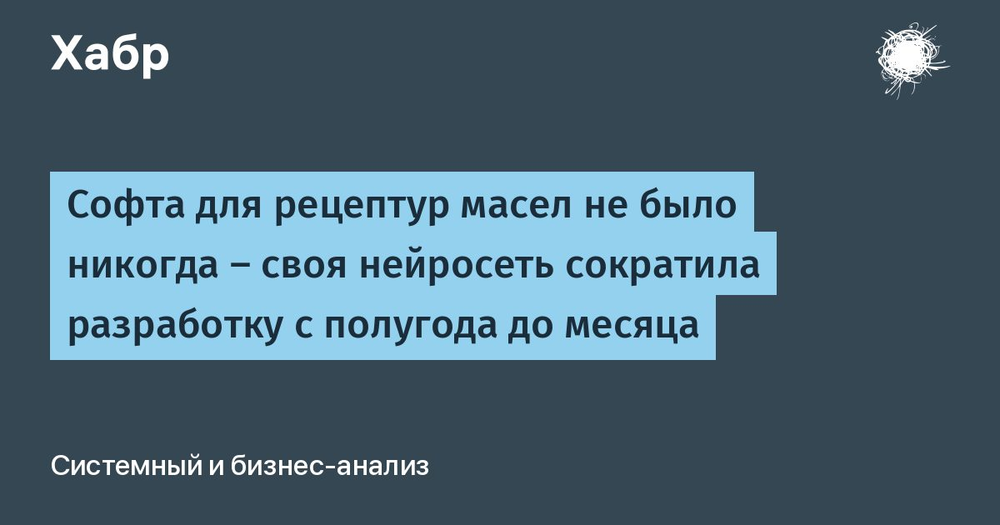

Софта для рецептур масел не было никогда — своя нейросеть сократила разработку с полугода до месяца
Есть такая работа — несколько лет подряд считать рейтинги российских промышленных компаний по открытым данным.
В последний год я всё чаще вижу один и тот же тип кейса: у компании уходит вендор, а готового продукта на замену просто нет.
С рецептурами масел у «Газпром нефти» было именно так — покупать было вообще не у кого, потому что такого продукта никогда не существовало.
Разбираюсь, как компания построила свою нейросеть «Алхимик» и что это меняет для остальной отрасли.
Узнать рецепт